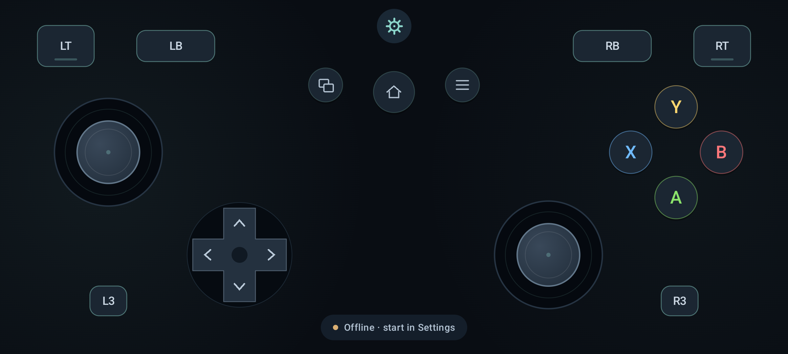

Download the APK
Use the download button on this page from your Android phone. You need Android 8.0 or later. Only install a build from a source you trust.
ANDROID 8.0+ / LOCAL NETWORK / NO ACCOUNT
Put the sticks where your thumbs land. Move, resize and hide controls, pick a color, then save a gamepad that fits your hands.
v0.6.0 prototype · Debug-signed test build · No store release · SHA-256
01 / GET IT ON YOUR PHONE
Use the download button on this page from your Android phone. You need Android 8.0 or later. Only install a build from a source you trust.
Open the APK. If Android asks, allow your browser or file manager to “Install unknown apps”. Keep Android's security checks enabled. Revoke that install permission afterward if you no longer need it.
Tap Install, then Open. The app starts with its server off. There is no login. The Android package ID remains unchanged so matching-key updates can retain your saved layout.
For a connected Android device with USB debugging enabled, install the APK using Android platform-tools:
adb install -r app/build/outputs/apk/debug/app-debug.apkTo package without running tests, use JDK 17, Android SDK platform 36 and build-tools 36.0.0. Set ANDROID_HOME to your SDK path, then run from the project folder:
./gradlew :app:assembleDebugThe debug APK appears at app/build/outputs/apk/debug/app-debug.apk. Debug builds are for testing. A later release signed with a different key may require uninstalling this build, which deletes its saved layout.
02 / FIT YOUR HANDS
You do not need to edit code to rearrange the controller.
Four built-in presets and one saved custom layout. Switching presets keeps your custom layout. Keep controls apart to avoid overlapping hit areas. Multiple custom profiles, import/export and button remapping are not included yet.

03 / YOUR EXISTING WINDOWS RECEIVER
From a PC with Python 3, run the independent probe included in the project. Replace PHONE_IPV4 with the phone's address.
python3 tools/probe.py PHONE_IPV4 --seconds 15It checks version, slot information, packet lengths and CRC, then prints button/stick changes. This is a protocol check, not a DSU Manager certification.
The app serves DSU data; it does not install a system-wide gamepad driver. Ordinary PC games may need a separate connector or virtual-controller driver.
WHEN SOMETHING DOESN'T CONNECT
Check the phone address and UDP port in the receiver. Disable guest-network isolation only if you manage the network. Check your PC firewall and receiver configuration. DSU clients must register and refresh their subscription; the phone does not broadcast unsolicited input.
That is deliberate. Locking the screen, backgrounding, opening the scanner, or changing the default network/IPv4 address stops the server. Transient focus loss only clears input; IPv6-only address changes do not stop it. Return to Settings, open Connection and restart the server.
Some DSU receivers only consume motion data. Check whether the receiver supports buttons and sticks and whether it exposes a controller to your game. Motion is disabled in this prototype; do not expect gyro-only receiver setups to work.
A network error may mean the port is already in use; try another port and update the receiver. Address detection and socket binding are separate. Verify that the phone has a usable IPv4 address. Hotspots, VPNs and multiple interfaces still need device-specific testing.
On your phone, in this app's private settings. There is no account, sync service or analytics. Clearing app storage or uninstalling removes the layout. Export and multiple saved profiles are not implemented.
Use a trusted LAN only. Standard DSU uses unauthenticated UDP; its CRC is an integrity check, not authentication or encryption. Do not forward the app's UDP port on your router.
THANK YOU
Thank you to breeze2, the creator of DSU Controller and DSU Manager. Their work inspired this independent project.
Thanks also to v1993 and the cemuhook-protocol contributors for documenting the DSU wire format.
This app is independently implemented and is not affiliated with, endorsed by, or an official release from breeze2. It does not reuse the original app's code, artwork or branding assets. Credits are not a claim of permission to reuse proprietary software.